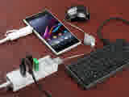
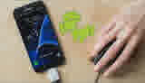

Disponibles: 3


Convierte tu teléfono en una mini PC portátil, gracias a este adaptador podes conectarle varias cosas como teclado, raton, contol de juegos, lector de DVD, pendrives, y cualquier otro dispositivo USB.
Muchos lo usan para mover musica de su telefono al pendrive y escucharlo luego en el coche. Otros lo usan con un raton por que tienen la pantalla del telefono rota. Tiene diversos usos.
Es para conectar varios dispositivos a la vez